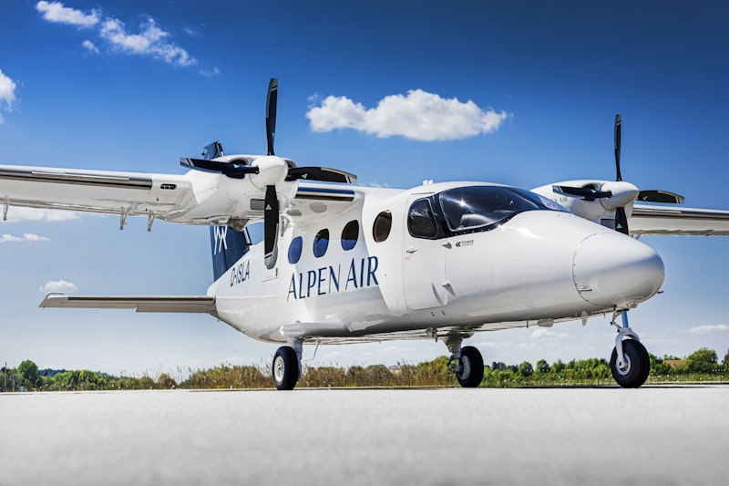
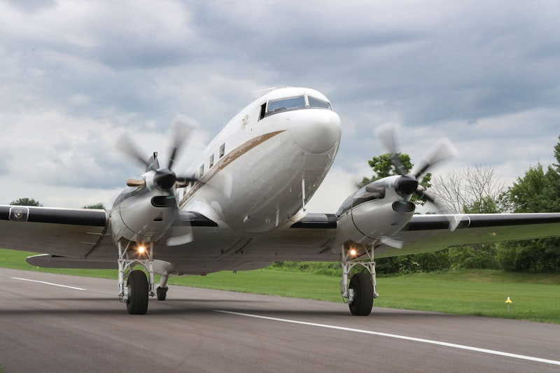
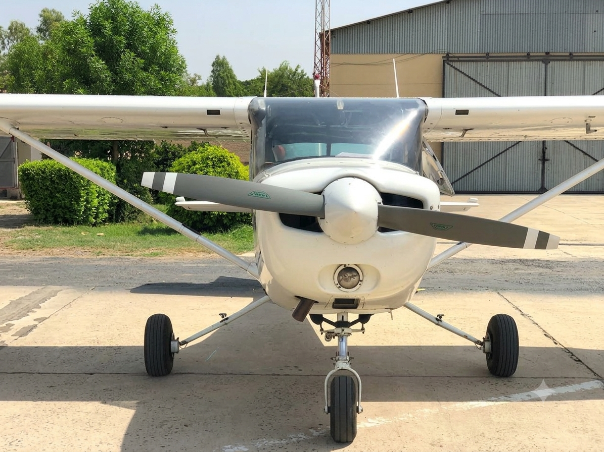

Ofrecemos una gestión integral de aeronavegabilidad adaptada explícitamente a aeronaves ligeras, helicópteros, planeadores, globos y dirigibles bajo nuestro alcance CAO especializado. Supervisamos sus programas de mantenimiento, gestionamos piezas con vida útil limitada, rastreamos Directivas de Aeronavegabilidad (AD) y controlamos defectos diferidos para mantener su flota continuamente conforme con todos los marcos regulatorios EASA.

Manejamos oficialmente sus procesos de Certificado de Revisión de Aeronavegabilidad (ARC). Nuestro equipo cualificado realiza revisiones exhaustivas de registros e inspecciones físicas de aeronaves para emitir o extender el Formulario EASA 15c, garantizando que su flota permanezca certificada y legalmente conforme sin fricciones administrativas.

Realizamos auditorías detalladas y preventivas de aeronavegabilidad para garantizar el cumplimiento completo. Fusionando los principios de seguridad EASA con rigurosos marcos de Auditor Líder ISO, nuestros procesos de evaluación identifican riesgos latentes y verifican que su seguimiento de calidad interno cumpla con los estándares internacionales de aviación, actuando como una auditoría simulada previa esencial antes de las inspecciones de la autoridad.

Ofrecemos inspecciones preventa integrales para brindarle total tranquilidad antes de comprar una aeronave. Nuestras evaluaciones exhaustivas analizan registros técnicos completos, historial estructural y configuraciones del sistema para que conozca el estado técnico y regulatorio exacto de su inversión.
Estamos disponibles en todo el continente para inspeccionar su aeronave y optimizar sus operaciones. Respaldados por nuestra membresía profesional en la Sociedad Alemana de Investigación Aeronáutica (GARS), ofrecemos consultoría técnica de alto nivel y estrategias corporativas de grado académico que alinean su gestión de flota con la investigación aeronáutica económica y de seguridad más avanzada.

Ofrecemos opciones de arrendamiento en seco adaptadas a sus requisitos operativos. Trabajamos estrechamente con escuelas de vuelo, aero-clubes y aviadores individuales para ofrecer soluciones flexibles que se ajusten a su plazo y presupuesto específicos. Esto incluye opciones especializadas y rentables para pilotos en formación que necesitan acumular horas de vuelo de manera eficiente.
Contáctenos para gestión de aeronavegabilidad, auditoría, consultoría o arrendamiento de aeronaves.
Póngase en contacto